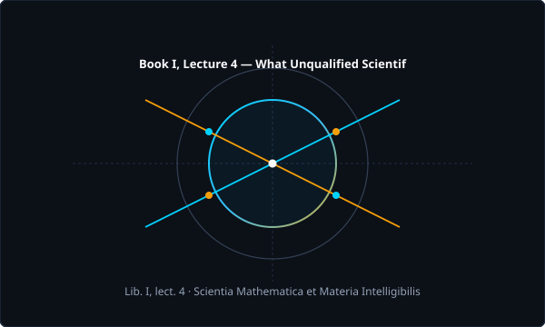

Book I, Lecture 3 — On Universal Knowledge and Recognizing the Singular Triangle Inscribed in a Semicircle¶
Liber I, Lectio 3 — De cognitione universali et recognitione figurae singularis in semicirculo descriptae

[lib. 1 l. 3 n. 1] After the Philosopher has shown how certain other things must be foreknown before knowledge of the conclusion is acquired, he now wishes to show how it happens that the conclusion itself is foreknown before knowledge of it is acquired through syllogism or induction. And concerning this he does two things. First, he determines the truth of the matter, saying that before induction or syllogism is introduced to produce knowledge of some conclusion, that conclusion is in a certain manner known, and in a certain manner not known: for unqualifiedly it is unknown, yet it is known only in a qualified sense. For instance, if this conclusion is to be proved, A triangle has three angles equal to two right angles, before it was demonstrated, he who receives scientific knowledge of it through demonstration did not know it unqualifiedly, yet knew it in a qualified sense. Hence in a certain manner he foreknew it, though not unqualifiedly. Now the reason for this is that, as has already been shown, the principles must be foreknown prior to the conclusion. And principles stand to conclusions in demonstrative matters just as active causes in natural things stand to their effects (whence in Book II of the Physics the propositions of a syllogism are placed in the genus of efficient cause). Now before an effect is produced in act, it pre-exists in its active causes virtually, though not in act, which is to exist unqualifiedly. And similarly, before a conclusion is deduced from demonstrative principles, in those very foreknown principles the conclusion is foreknown virtually, though not in act: for in this way it pre-exists in them. And thus it is clear that it is not foreknown unqualifiedly, but in a qualified sense.
[lib. 1 l. 3 n. 2] Second, at But if not, et cetera, from the truth thus determined he excludes a certain difficulty that Plato raises in the book Meno, so entitled after the name of his disciple. Now the difficulty is as follows. He introduces someone altogether unskilled in the art of geometry who is questioned in an orderly sequence concerning the principles from which a certain geometrical conclusion is inferred, beginning from principles known through themselves (per se nota); to all of these the man ignorant of geometry answered what is true, and as the questions were carried forward step by step down to the conclusions, at every point he answered what is true. From this, therefore, Plato wishes to conclude that even those who appear unskilled in certain arts possess knowledge of them before they are instructed in them. And thus it follows that either a man learns nothing, or he learns the very things he already knew beforehand.
[lib. 1 l. 3 n. 3] Concerning this, therefore, he does four things. First, he sets forth that the aforesaid difficulty cannot be avoided unless the previously determined truth is presupposed, namely, that the conclusion which someone learns through demonstration or induction was known prior thereto not unqualifiedly, but insofar as it exists virtually in its principles—concerning which someone ignorant of the science, upon being questioned, is able to answer the truth. According to Plato’s teaching, however, the conclusion was foreknown unqualifiedly; hence it was not learned anew, but was rather brought back to memory through a certain deduction of reason—just as Anaxagoras too holds concerning natural forms that prior to generation they pre-existed in matter unqualifiedly, whereas Aristotle holds that they pre-exist in potency and not unqualifiedly.
[lib. 1 l. 3 n. 4] Second, when he says, For clearly not as some, et cetera, he sets down the false reply of certain thinkers to Plato’s difficulty—those, namely, who said that before a conclusion was demonstrated or learned in whatever manner, it was in no way known. For according to Plato’s difficulty an objection could be raised against them in this way: if someone were to ask an unlearned person, ‘Do you know that every dyad is even?’ and upon his saying so, that is, granting that he knows it, the questioner were to bring forward a certain dyad which the person questioned did not suppose to exist—say, that dyad which is the third part of six—it would be concluded that he knew the third part of six to be an even number, which was in fact unknown to him, though he learns it through the demonstration introduced. And thus it seems to follow that either he would not learn this, or he would learn what he already knew beforehand. In order to evade this difficulty, therefore, they solved it by saying that he who upon being questioned answered that he knew every dyad to be an even number did not assert that he knew every dyad unqualifiedly, but only every one that he knew to be a dyad. Hence, since that dyad which was brought forward was altogether unknown to him, he in no way knew that this dyad was an even number. And thus it follows that in one who knows the principles, the conclusion is in no way foreknown, neither unqualifiedly nor in a qualified sense.
[lib. 1 l. 3 n. 5] Third, at Yet they know, et cetera, he refutes this solution in the following manner. That is scientifically known of which a demonstration is possessed, or of which a demonstration is newly received—and this latter phrase is added on account of the learner, who begins to know. Now learners do not receive a demonstration concerning every dyad of which they have knowledge, but concerning every dyad unqualifiedly, and similarly concerning every number or every triangle. Therefore it is not true that one knows this concerning every number which he knows to be a number, or concerning every dyad which he knows to be a dyad, but rather concerning every one unqualifiedly. And that one does not know it concerning every number which he knows to be a number, but concerning every one unqualifiedly, he proves at For no proposition, et cetera: the conclusion agrees in its terms with the premises, for the subject and predicate of the conclusion are the major and minor extremes in the premises; yet in the premises no proposition is assumed concerning number or concerning a straight line with the qualification which you know, but rather concerning every one unqualifiedly; neither, therefore, does the conclusion of the demonstration carry the aforesaid qualification, but holds of every one unqualifiedly.
[lib. 1 l. 3 n. 6] Fourth, at Yet nothing prevents, et cetera, he sets down the true solution to the aforesaid difficulty in accordance with the truth previously determined, saying that nothing prevents what someone learns from being at first in a certain manner known and in a certain manner unknown. For there is nothing absurd if someone in a certain manner foreknows what he learns; what would be absurd is if he foreknew it in the very same manner in which he learns it. For to learn, properly speaking, is for scientific knowledge to be generated in someone. Now what is generated, prior to its generation, was neither altogether non-being nor altogether being, but in a certain manner being and in a certain manner non-being: being in potency, indeed, yet non-being in act; and this is what it is to be generated, namely, to be reduced from potency to act. Hence what someone learns was neither altogether known beforehand, as Plato held, nor altogether unknown, as was held according to the solution refuted above; rather, it was known potentially or virtually in the foreknown universal principles, while unknown in act according to proper knowledge. And this is what it is to learn: to be brought from potential, or virtual, or universal knowledge into proper and actual knowledge.